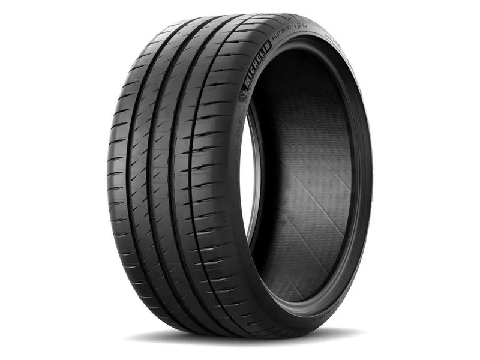

Pneu Michelin Pilot Sport 5 225/45 R17 91Y
- Medida
- 225/45 R17
- Categoria
- Performance / UHP
- Carga
- 91 (615 kg)
- Velocidade
- Y (300 km/h)
O item fica salvo no carrinho deste navegador.
- Frete grátis para a região Sudeste em compras acima de R$ 500,00.
- Parcelamento em até 10x sem juros no cartão.
- Garantia de 5 anos contra defeito de fabricação.
Conheça o Michelin Pilot Sport 5
O Michelin Pilot Sport 5 é o pneu de alta performance da Michelin para uso na rua. Ele herda tecnologia da linha de competição: a carcaça Dynamic Response usa uma faixa híbrida de aramida e náilon que mantém a forma do pneu sob carga lateral, melhorando a precisão da direção em curvas rápidas.
A banda assimétrica tem blocos externos maciços, que sustentam o carro em curvas, e sulcos largos na parte interna para drenagem. O composto combina sílica e elastômeros de alto desempenho, o que dá aderência no seco sem sacrificar a frenagem no molhado.
É a escolha de quem quer o melhor equilíbrio entre desempenho e vida útil: o Pilot Sport 5 dura mais que muitos UHP de proposta equivalente, mantendo o nível de aderência típico da linha Pilot Sport.
Especificações do pneu
| Marca | Michelin |
|---|---|
| Modelo | Pilot Sport 5 |
| Categoria | Performance / UHP |
| Medida | 225/45 R17 |
| Aro | 17 |
| Largura / Perfil | 225 mm / 45 |
| Índice de carga | 91 (615 kg por pneu) |
| Índice de velocidade | Y (até 300 km/h) |
| Construção | Radial, sem câmara (tubeless) |
| Desenho da banda | Assimétrico |
| Uso | Verão / alta performance |
| Aplicação | Esportivos e sedãs com aro 17 |
| Aderência em piso molhado (etiqueta) | Classe A |
| Garantia | 5 anos contra defeito de fabricação |
| Origem | França / Espanha (varia conforme o lote) |
Índice de carga e velocidade devem ser iguais ou superiores aos especificados no manual do seu veículo. Confira a medida na etiqueta da coluna da porta.